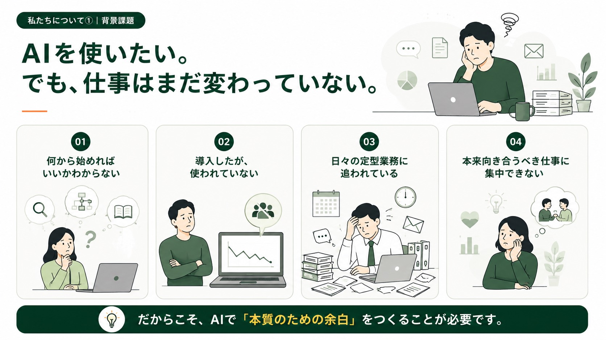
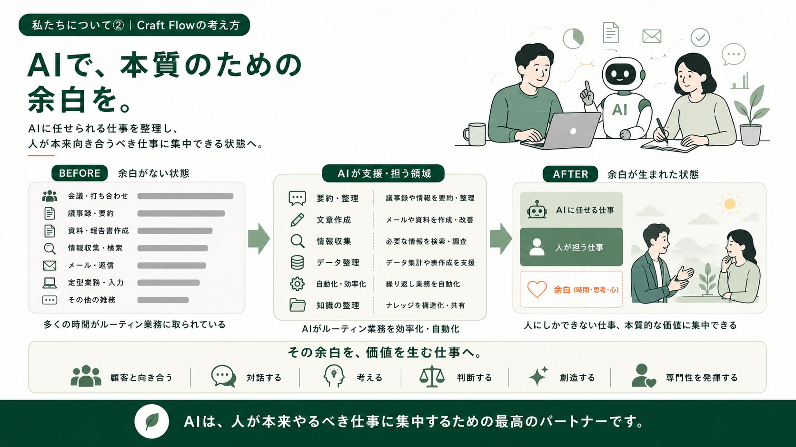
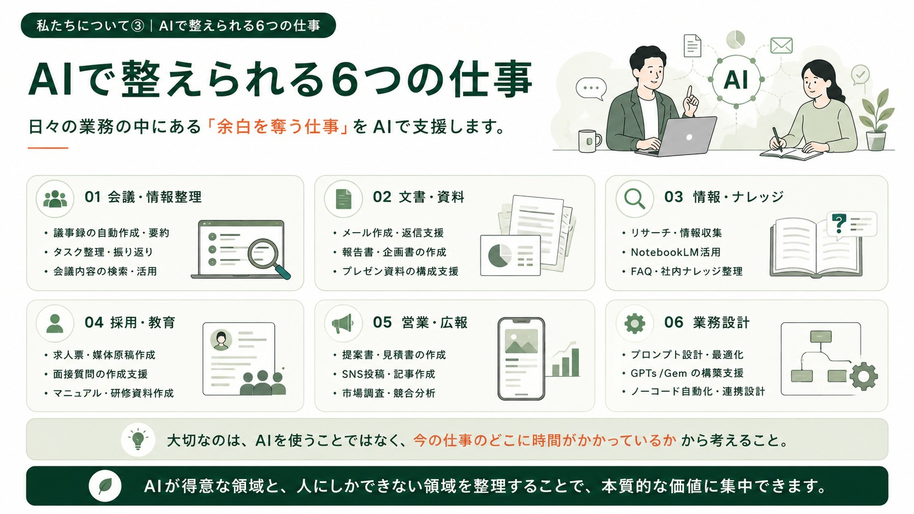
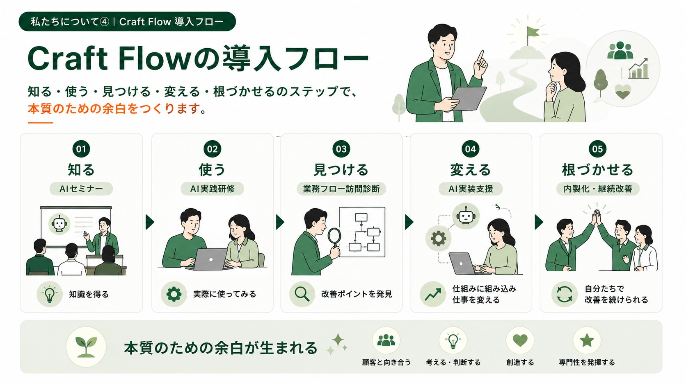
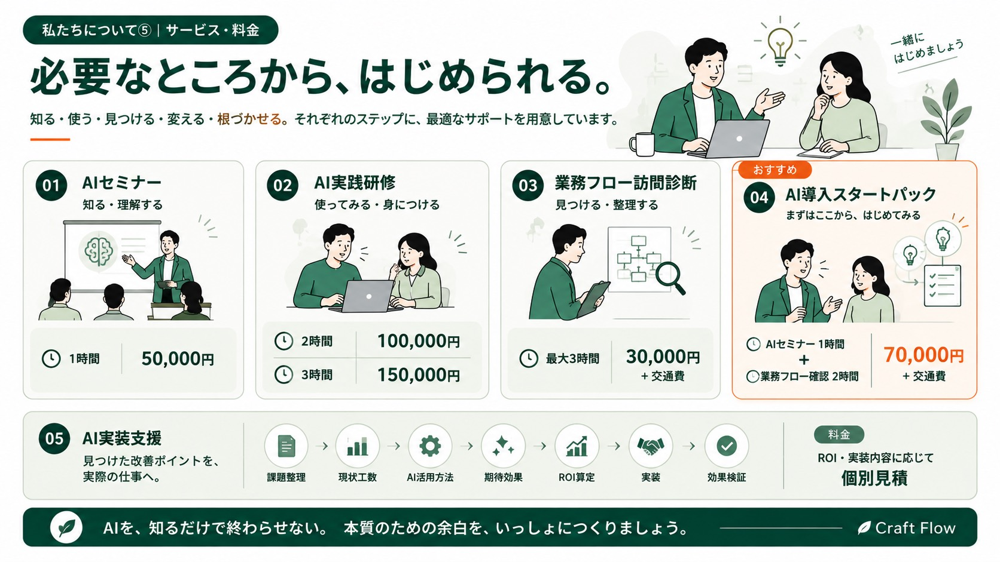
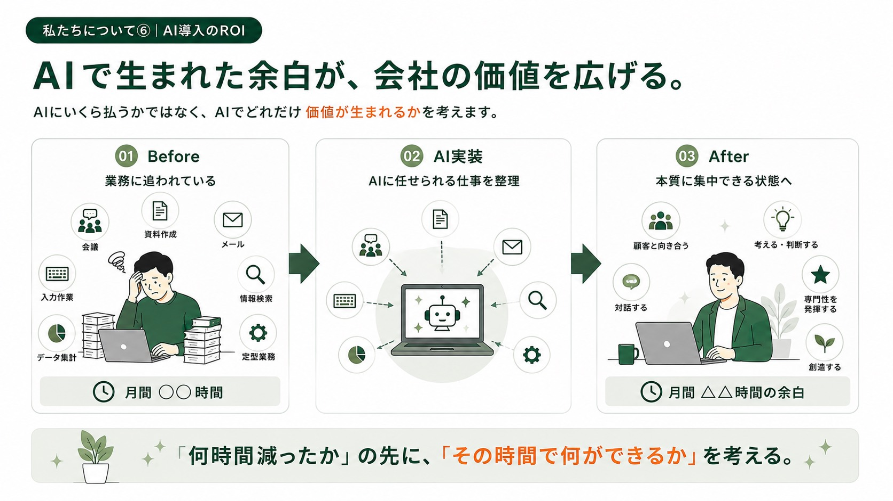
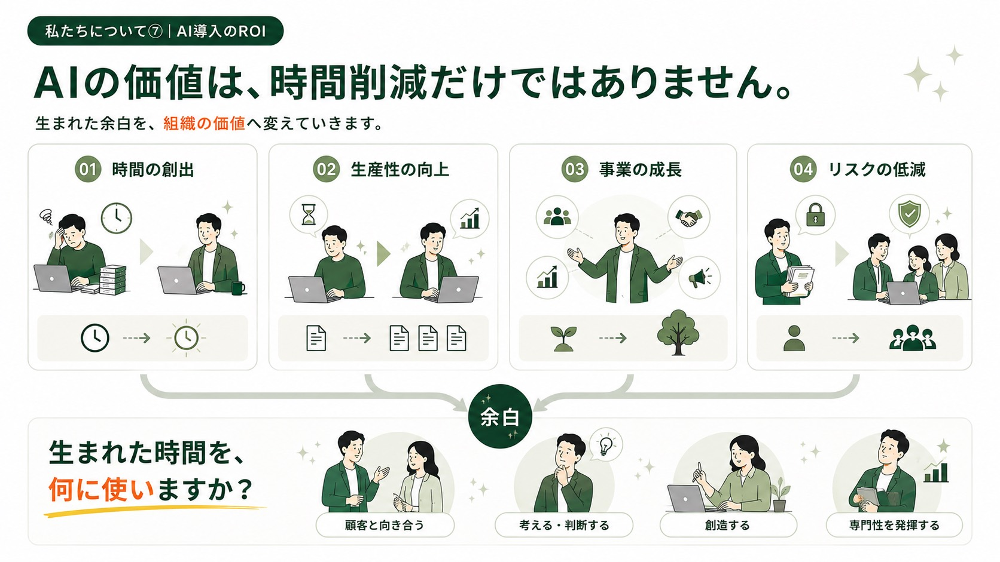

会議・情報整理
議事録、要約、タスク整理、振り返り。
生成AIを日常業務のベーススキルへ。AIに任せられる仕事を整理し、人が本来向き合うべき仕事と、届けたい価値に集中できる状態をつくります。
AIツールの情報は増えていても、自社のどの業務をどう変えるかまで整理できていないと、導入は日常業務の改善につながりません。

AIの情報は増えているものの、自社で何から始めるべきか整理できていない。まずは業務を見える化し、着手点を決めます。
Craft Flowは、AIが支援できる仕事を整理することで、時間の余白、思考の余白、心理的な余白をつくります。その余白を、顧客と向き合う、対話する、考える、判断する、創造する、専門性を発揮するといった本質的な仕事へ戻していきます。

具体的なAIツール名に依存せず、会議、文書、ナレッジ、採用、広報、業務設計といった日常業務から改善ポイントを見つけます。

議事録、要約、タスク整理、振り返り。
メール、報告書、企画書、プレゼン資料。
リサーチ、社内情報整理、FAQ、情報検索。
求人、研修、マニュアル、教育資料。
提案書、SNS、記事、顧客対応。
プロンプト、AI環境、自動化、業務フロー改善。
すべての企業が最初から同じステップで始める必要はありません。現在地に合わせて、必要なフェーズから支援します。

AIセミナーで基本と可能性を理解する。
AI実践研修で実務に近い使い方を体験する。
業務フロー訪問診断で改善余地を整理する。
実際の仕事にAI活用・自動化を実装する。
内製化し、継続改善できる状態をつくる。
まずは小さく始めたい企業にも、実装まで進めたい企業にも合わせて設計します。

AI活用の基本と、業務改善につなげる考え方を講義形式で整理します。
実務に近い題材で、生成AIを使う体験と社内展開の入口をつくります。
最大3時間、現場の仕事を聞きながらAIで整えられる業務を見つけます。
AIセミナー1時間と業務フロー確認2時間を組み合わせ、最初の一歩を明確にします。
診断で終わらせず、業務にどのような価値が期待できるかを見ながら、AI活用・自動化・運用ルールまで実装します。実装支援はROIと内容に応じて個別見積です。
Craft Flowでは、削減時間そのものではなく、その時間を何に使えるようにするかまで一緒に考えます。


ルーティン業務を減らし、本質的な仕事へ時間を戻す。
同じ時間で、よりよいアウトプットを目指せる余地を見つける。
営業・採用・広報・顧客対応などを前へ進める。
属人化を減らし、情報や業務を組織に残す。
Craft Flowがいなくなったあとも、自分たちで改善を続けやすい状態を目指します。
最新情報を追うだけでなく、実際の仕事で使える形へ翻訳し続けています。
毎週土曜日 朝6:00に、AIニュースや新機能を整理し、実務への活かし方を共有しています。
AI活用・業務改善・実践事例を、現場の目線で発信しています。
AIニュースや活用について、音声でわかりやすく解説しています。
生成AIを中心とした日常業務の改善・内製化を支援します。高度なAI開発、独自LLM、大規模基幹システム開発などは原則対象外です。
大丈夫です。専門用語からではなく、今の仕事で時間がかかっていることを聞くところから始めます。
ツール選定も含めて整理します。特定ツールありきではなく、業務に合う使い方を一緒に考えます。
対応できます。文書、会議、情報整理、教育、広報などの業務が多い中小企業にも対応します。
対応可能です。業務フロー確認や研修内容によって、訪問・オンラインを組み合わせます。
AI利用ルールや情報の扱い方も整理します。機密情報や個人情報を扱う業務では、導入範囲を慎重に設計します。
Google Workspace、GAS、軽量なWebアプリ、自動化の相談は可能です。大規模な基幹システム開発は対象外です。
まだ課題が明確でなくても大丈夫です。今どこに時間がかかっているのか、一緒に整理するところから始めます。
ご相談内容をもとに、対応できる範囲と概算の進め方を個別にご案内します。